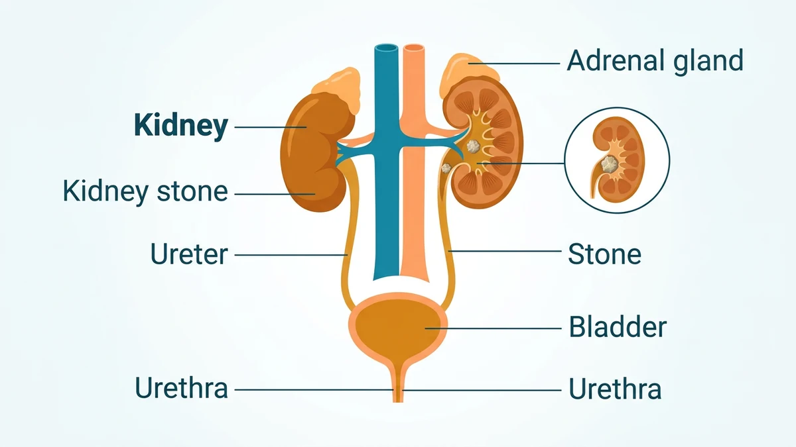
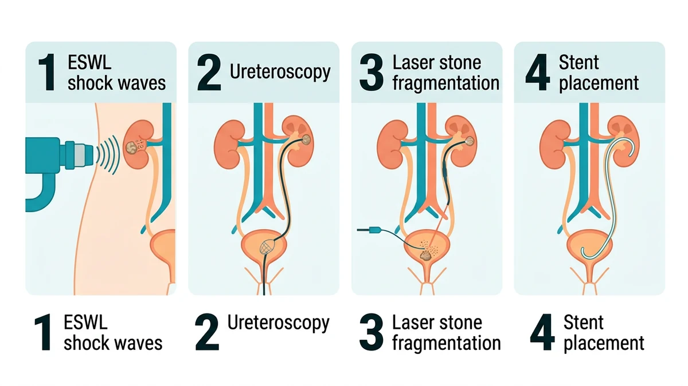

جراحی سنگ کلیه به مجموعه روشهایی گفته میشود که سنگ بزرگ، گیرکرده یا عارضهدار را از کلیه یا حالب خارج میکنند. امروزه بیشتر این کارها بدون برش بزرگ و با روشهای کمتهاجمی مثل سنگشکن بروناندامی، یورتروسکوپی با لیزر یا جراحی پوستی انجام میشوند و بیمار معمولاً دوران نقاهت کوتاهی دارد.
بسیاری از بیماران با شنیدن نام عمل سنگ کلیه تصور میکنند حتماً باید شکم باز شود، در حالی که امروز رایجترین روشها از راه مجرای طبیعی ادرار یا با امواج از بیرون بدن انجام میشوند. در این راهنما مسیر کامل درمان جراحی سنگ کلیه را باز میکنیم. آمادگیهای پیش از عمل در مقالهٔ آمادگی قبل از جراحی سنگ کلیه و مراقبتهای پس از آن در مراقبتهای بعد از جراحی سنگ کلیه آمده است.
کلیهها خون را تصفیه و ادرار تولید میکنند. وقتی غلظت بعضی مواد معدنی در ادرار بالا برود، بلورهای ریز تشکیل میشوند و کمکم به هم میچسبند تا سنگ ساخته شود. تا وقتی سنگ درون کلیه آرام بماند ممکن است بیعلامت باشد، اما همینکه وارد حالب شود و مسیر باریک ادرار را ببندد، فشار پشت آن بالا میرود و درد شدید و موجمانند پهلو ایجاد میکند.
بسیاری از سنگهای کوچک با نوشیدن آب و حرکت خودبهخود دفع میشوند، اما سنگهای بزرگتر یا گیرکرده نیاز به مداخله پیدا میکنند. جایگاه دقیق اجزای دستگاه ادراری و سنگ در شکل زیر نشان داده شده است.

اورولوژیست بر اساس اندازه، جای و نوع سنگ و علائم بیمار تصمیم میگیرد. شایعترین شرایط نیازمند درمان فعال عبارتاند از:
سه روش رایج بسته به جای و اندازهٔ سنگ انتخاب میشوند؛ هیچ روشی برای همه مناسب نیست و تصمیم نهایی با اورولوژیست است.
| روش | چگونه کار میکند | کاربرد رایج |
|---|---|---|
| سنگشکن بروناندامی (ESWL) | امواج ضربهای از بیرون بدن سنگ را به تکههای ریز میشکند تا با ادرار دفع شوند | سنگهای کوچک تا متوسط درون کلیه یا بخش بالای حالب |
| یورتروسکوپی با لیزر | دوربین باریک از راه مجرای ادرار بالا میرود و سنگ با لیزر خرد و خارج میشود | سنگهای حالب و سنگهای سخت یا مقاوم به ESWL |
| نفروولیتوتومی پوستی (PCNL) | دسترسی مستقیم از یک شکاف کوچک پوست پهلو به درون کلیه برای خارج کردن سنگ بزرگ | سنگهای بزرگ یا پرشاخهای درون کلیه |
بسته به روش انتخابی، مسیر کلی درمان در چهار گام اصلی دنبال میشود:

یورتروسکوپی و روش پوستی معمولاً با بیهوشی عمومی انجام میشوند، یعنی بیمار در تمام مدت خواب عمیق دارویی است و دردی حس نمیکند. جزئیات بیهوشی عمومی در مقالهٔ بیهوشی عمومی چگونه است توضیح داده شده است. در ESWL بسته به مرکز و شرایط بیمار ممکن است آرامبخش وریدی یا بیهوشی کوتاه به کار رود، چون امواج ضربهای میتوانند ناخوشایند باشند.
پس از عمل در اتاق ریکاوری علائم حیاتی و وضعیت ادرار پایش میشود. دیدن مقدار کم خون در ادرار، سوزش هنگام دفع و احساس فوریت ادرار در روزهای نخست شایع است و با نوشیدن آب و استنت موقت بهتدریج کم میشود.
استنت لولهای نرم و موقتی است که یک سر آن در کلیه و سر دیگرش در مثانه قرار میگیرد. وجود آن ممکن است تکرر ادرار، سوزش خفیف یا درد مبهم هنگام دفع ایجاد کند که طبیعی است و با برداشتن استنت برطرف میشود. زمان دقیق خارج کردن استنت را اورولوژیست تعیین میکند و معمولاً با روشی سریع و سرپایی انجام میگیرد.
روشهای درمان سنگ کلیه سابقهٔ ایمنی بالایی دارند، اما مانند هر مداخلهای عفونت ادراری، خونریزی، آسیب موقت به پوشش حالب، تنگی مسیر یا باقیماندن تکهٔ کوچک سنگ بهندرت ممکن است. تصویربرداری پیش از عمل و پیگیری پس از آن این خطرها را تا حد امکان پایین میآورد.
⚠️ پس از ترخیص، در صورت تب و لرز، درد شدید پهلو که با مسکن کم نمیشود، ناتوانی کامل در دفع ادرار، خونریزی زیاد یا لختهٔ بزرگ در ادرار، استفراغ مداوم یا تنگی نفس منتظر نمانید و فوراً با اورولوژیست معالج تماس بگیرید یا با ۱۱۵ اورژانس را خبر کنید. فهرست کامل علائم در صفحهٔ علائم خطر بعد از عمل آمده است.
جراحی سنگ کلیه به مجموعه روشهایی گفته میشود که سنگ بزرگ، گیرکرده یا عارضهدار را از کلیه یا حالب خارج میکنند. وقتی سنگ بهطور خودکار دفع نشود، راه ادرار را ببندد، عفونت یا تب ایجاد کند یا درد غیرقابل تحمل داشته باشد، مداخله لازم میشود.
در سنگشکن بروناندامی (ESWL) امواج ضربهای از بیرون بدن سنگ را به تکههای ریز تبدیل میکند تا با ادرار دفع شوند و نیازی به برش نیست. در یورتروسکوپی دوربین باریکی از راه مجرای ادرار بالا میرود و سنگ معمولاً با لیزر خرد و خارج میشود؛ این روش برای سنگهای حالب و سنگهای سخت دقیقتر است.
استنت لولهٔ پلاستیکی ظریفی است که بین کلیه و مثانه داخل حالب قرار میگیرد تا پس از خرد کردن سنگ، مسیر ادرار باز بماند و تکههای سنگ راحتتر عبور کنند. استنت موقتی است و معمولاً پس از چند روز تا چند هفته با روش ساده برداشته میشود.
یورتروسکوپی و روشهای پوستی معمولاً با بیهوشی عمومی انجام میشوند تا بیمار کاملاً بیحرکت و بدون درد باشد. سنگشکن بروناندامی بسته به مرکز و شرایط بیمار ممکن است با آرامبخش یا بیهوشی کوتاه انجام شود. انتخاب نهایی در مشاوره بیهوشی تعیین میگردد.
خروج تکههای ریز سنگ با ادرار ممکن است با سوزش خفیف، تکرر ادرار و گاهی درد مبهم پهلو همراه باشد و دیدن مقدار کم خون در ادرار شایع است. نوشیدن آب کافی به دفع سریعتر کمک میکند. درد شدید، تب یا خونریزی زیاد غیرطبیعی است و باید گزارش شود.
این روشها سابقهٔ ایمنی بالایی دارند، اما مانند هر مداخلهای عفونت ادراری، خونریزی، آسیب به پوشش حالب، تنگی مسیر یا باقیماندن تکهٔ سنگ بهندرت ممکن است. انتخاب روش مناسب بر اساس اندازه و جای سنگ و پیگیری پس از عمل این خطرها را تا حد امکان کم میکند.
دستور پزشک و پروتکل مرکز درمانی شما بر هر متن عمومی مقدم است.
این مقاله صرفاً جنبهی آموزش و اطلاعرسانی دارد و جایگزین تشخیص، مشاوره یا درمان پزشکی نیست.